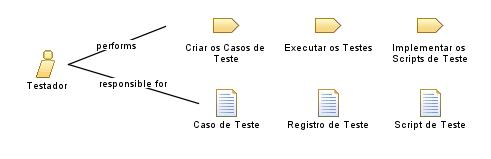

| Role: Testador |
 |
|
Relationships
 |
||
| Additionally Performs | ||
|---|---|---|
| Modifies |
|
|
Main Description
Este papel é responsável principalmente pelas seguintes tarefas:
|
Staffing
| Skills | Uma pessoa que execute este papel deve ter as seguintes habilidades:
Onde testes automatizados forem necessários, considere solicitar estas qualificações adicionais:
Nota: Os requisitos específicos de habilidade variam dependendo do tipo de teste que você está conduzindo. Por exemplo, as habilidades necessárias para usar com sucesso ferramentas de automatização de teste de carga de sistema são diferentes daquelas necessárias para a automatização de testes funcionais do sistema. |
|---|---|
| Assignment Approaches | Este papel pode ser atribuído das seguintes formas:
|
Este programa e o material que o acompanha são disponibilizados sob a |